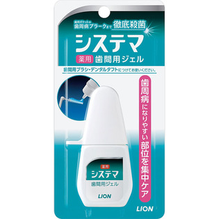

返回列表
产品名称：システマ 薬用歯間用ジェル

ライオン システマ 薬用歯間用ジェル １８ｍｌ（医薬部外品）
メーカー ライオン
JANコード 4903301373087
商品の特徴
浸透殺菌
歯周病になりやすい歯間を集中ケア
- 成分・分量
- ＜主成分＞
ソルビット液、PG、エタノール、ポリオキシエチレン硬化ヒマシ油
- 用法及び用量
- 1.歯間ブラシに適量(垂れない程度の量)をつけてください。歯間ブラシのキャップ等の小さな容器に適量をとって、お使いいただく方法もあります。
2.歯間ブラシは歯間部にまっすぐに挿入し、数回往復させてブラッシングしてください。ブラシは頬側からだけでなく、舌側からも挿入して清掃すると、より効果的です。
3.使用後は、お口をかるくすすいでください。ふつうのハブラシでも、ご使用になれます。